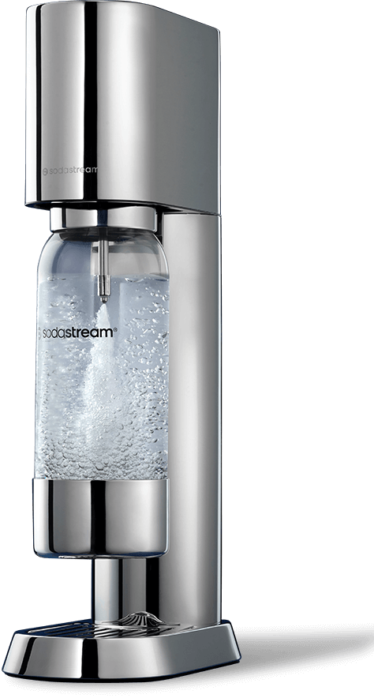
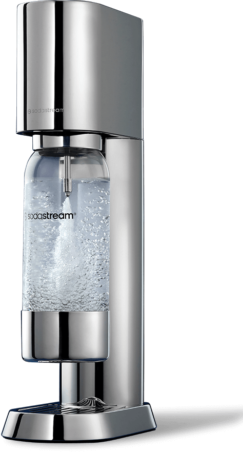
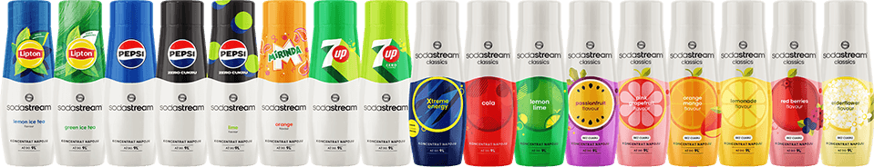

Harmonia formy
i funkcjonalności
SodaStream Ensō to esencja minimalizmu i elegancji. Ten inspirowany japońskim wzornictwem ekspres do gazowania wody, zaprojektowany przez cenionego projektanta Naoto Fukasawę, zachwyca prostotą formy i subtelnym urokiem.
 

Dbałość o detale

Każdy element SodaStream Ensō został starannie przemyślany, łącząc sztukę użytkową z najwyższej jakości materiałami. To urządzenie, które łączy wyrafinowany design z codzienną wygodą.
Technologia dla Twojej wygody
Z SodaStream Ensō codzienne gazowanie wody jest łatwiejsze i przyjemniejsze niż kiedykolwiek wcześniej. Dzięki nowoczesnym rozwiązaniom technologicznym możesz cieszyć się wygodą na każdym kroku.
Bottle Snap & Lock
Montaż i demontaż butelki jest dziecinnie prosty. System „klik” pozwala na szybkie zabezpieczenie
butelki
jednym ruchem,
co sprawia, że korzystanie
z urządzenia jest intuicyjne
i wygodne.
Quick Connect
Innowacyjny system montażu cylindra CO₂ eliminuje konieczność wkręcania. Wystarczy wsunąć cylinder do specjalnej komory, by saturator SodaStream Ensō był gotowy do działania.
Trwałość i estetyka
Elementy wykonane ze stali nierdzewnej gwarantują niezawodność i łatwość utrzymania w czystości,
a jednocześnie dodają urządzeniu elegancji.
Wyjątkowa butelka –
styl i trwałość
W zestawie z SodaStream Ensō znajdziesz butelkę, która zachwyca designem i funkcjonalnością. Została wykonana z Tritanu - materiału, wyróżniającego się trwałością i odpornością na matowienie. Co jeszcze sprawia, że jest wyjątkowa?
- Elegancja: Połyskujące detale ze stali nierdzewnej dodają jej wyjątkowego charakteru.
- Higiena: Odłączana podstawa i możliwość mycia w zmywarce gwarantują najwyższy poziom czystości.
- Bezpieczeństwo: Butelka nie zawiera BPA, co czyni ją bardziej przyjazną w codziennym użytkowaniu.
- Kompatybilna z modelami Ensō, Art i Terra.
Doskonała na co dzień Pojemność 1 litra sprawia, że butelka nadaje się codziennego użytkowania w domu i poza nim. Dzięki niej możesz cieszyć się świeżymi bąbelkami zawsze wtedy, gdy tego potrzebujesz.
Dla Ciebie,
dla planety
Wybierając SodaStream Ensō, wspierasz zrównoważony styl życia. Dzięki wielorazowym butelkom i domowemu
gazowaniu wody,
możesz znacząco ograniczyć swój negatywny wpływ na środowisko.
Koniec z jednorazowym plastikiem
Każda wielorazowa butelka SodaStream
to mniej plastikowych butelek jednorazowego użytku w Twoim domu. To proste rozwiązanie, które robi
ogromną
różnicę.
Oszczędność energii i zasobów
Unikając kupowania i transportowania ciężkich zgrzewek wody, dbasz o środowisko. To wygoda dla Ciebie i
troska o
przyszłość naszej planety.

Daj wyraz swojej kreatywności
Z ekspresem do gazowania wody SodaStream Ensō każdy dzień to szansa na odkrycie nowych smaków i eksperymenty w domowym zaciszu. Urządzenie pozwala tworzyć napoje gazowane dopasowane do Twoich indywidualnych preferencji.
Pełna kontrola smaku
Decyduj o intensywności bąbelków, wybieraj ulubione syropy SodaStream lub dodawaj świeże owoce, zioła czy przyprawy. Dzięki SodaStream Ensō możesz puścić wodze fantazji i tworzyć napoje, które idealnie trafią w Twój gust.
Kreatywność w trzech krokach
gazuj

Napełnij butelkę zimną wodą z kranu i nagazuj według własnych upodobań.
miksuj

Dodaj wybrane składniki – od klasycznych syropów po świeże owoce.
smakuj
Rozkoszuj się orzeźwiającym napojem stworzonym przez Ciebie.
Domowe eksperymenty z napojami jeszcze nigdy nie były tak proste i satysfakcjonujące!

Napełnij butelkę zimną
wodą z kranu i nagazuj według własnych
upodobań.
Dodaj wybrane
składniki – od
klasycznych syropów
po świeże owoce.

Rozkoszuj się orzeźwiającym napojem stworzonym przez Ciebie.
Domowe eksperymenty z napojami jeszcze nigdy nie były tak proste i satysfakcjonujące!
Perfekcyjne
koktajle i moktajle
na 1, 2, tssst!

Dzięki linii SodaStream Crafted każdy dzień może zyskać wyjątkowy smak. Te bezalkoholowe bazy do koktajli i moktajli pozwolą Ci szybko przygotować oryginalne napoje, które zachwycą Ciebie i Twoich gości.
Unikalne kompozycje smakowe
Ananas & Jalapeño:
Unikalne połączenie smaków tropikalnego ananasa i ognistego jalapeño, które rozpali wszystkie zmysły
Grejpfrut & Czarny Bez:
Wyrafinowana kompozycja smaków soczystego grejpfruta
i romantycznych kwiatów czarnego bzu oczaruje
Twoich gości
Brzoskwinia & Imbir:
Owocny mariaż smaków
słodkiej brzoskwini
z pikantnym imbirem zachwyca balansem
i przyjemnie orzeźwia
Prostota i finezja
Wystarczy napełnić szklankę wodą gazowaną i dodać ulubione owoce by stworzyć napój, który nada smaku każdej chwili. Pobudź swoją kreatywność z SodaStream Crafted i otwórz się na nowe doznania.

Jedna SodaStream – wiele możliwości
Odkryj bogactwo syropów SodaStream i stwórz ulubione napoje w każdej chwili! Wybierz klasyczne smaki jak Pepsi, 7UP czy Mirindę lub sięgnij po owocowe syropy o smaku Marakui, Owoców Leśnych czy Różowego Grejpfruta.
Stwórz własną kolekcję smaków!